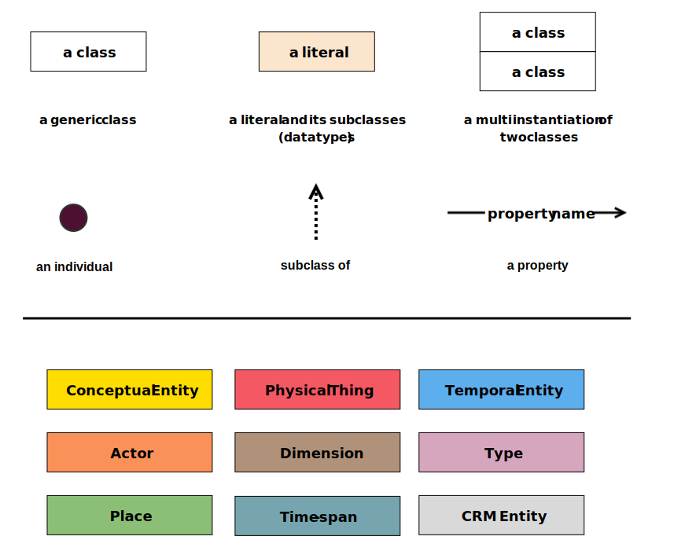
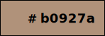
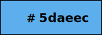
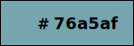
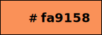
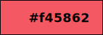

This document introduce the Graphical Framework for representing CIDOC-CRM Schema using a set of graphical specifications for identifying the diverse classes and properties of CIDOC-CRM in a clear and understable manner. The objective of the document is to propose the use of eight different colours for the representation of eight classes (and their respective subclasses) in CRM.
The colours have been chosen in order to provide a clear and straightdorward characterisation of the entity diversity in a CIDOC-CRM graphical representation, helping the user navigate complex models and promptly understand what type of classes are being depicted. The figure below provide an overview of the graphical framework used

Figure 1: a graphical framework for representing CIDOC-CRM Schema.
In this section we introduce the basic identification characteristics of the documented classes. For each class a rectangle with solid black border is used to declare classes. The distinction between the type of classes is given by the colour of the rectangle. The text inside each rectangle report the hex value of its colour. The colour value is also reported in RGB.
| Type of class | Graphic Representation | RGB value |
|---|---|---|
| E28 Conceptual Object | rgb(255,220,0) | |
| E18 Physical Thing |  | rgb(244,88,98) |
| E53 Place | rgb(140,191,118) | |
| E2 Temporal Entity |  | rgb(93,174,236) |
| E52 Time-Span |  | rgb(118,165,175) |
| E39 Actor | rgb(250,145,88) | |
| E55 Type |  | rgb(213,166,189) |
| E54 Dimension |  | rgb(176,146,122) |
| E54 Dimension | rgb(217,217,217) | |
| Literals | rgb(252,229,205) |